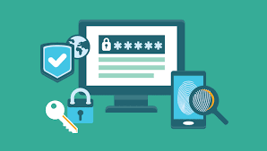

presentacion

very well friends I will talk a little about the security of these two operating systems and to start what is security?
parrafo 1
Many people believe that it is correct to say that a product is secure, so for example, Windows is more secure than Linux, Firefox is more secure than Internet Explorer, etc. This is partially true. In reality, security is not a product, or something that comes ready-made and to go. Rather, it is a process in which the user plays a central role. In other words, security is a state that must be actively maintained through proper and responsible interaction between the user and the installed software or operating system.
parrafo 2
No software or operating system is capable of providing any kind of security if the user puts in dumb passwords like "123", or if he doesn't take the proper precautions. That said, it is true that some programs and operating systems are more secure than others because they have fewer vulnerabilities, or are updated faster in short, this makes it more difficult for hackers to steal information.